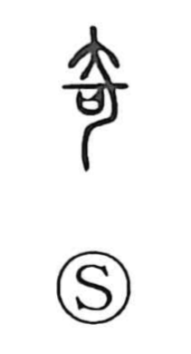

奇

Kun: ayashii, kushiki | On: ki
strange ・ unusual ・ exceptional
Explanation
Shirakawa reads 奇 as a ritual compound: one element is 口, understood not as a mouth but as the sacred receptacle (sai) that holds written petitions to the gods; the other depicts a large, curved knife with a handle. In the oracle and bronze forms the character portrays urging or pressing the deities with this imposing knife so that the prayers placed in the receptacle will be brought to fruition, a structure comparable to that of 可. Because such knife‑bearing supplication lies outside ordinary practice, the graph came to mean what departs from the usual—strange, different—and by extension what stands out by surpassing the norm, hence “exceptional.”